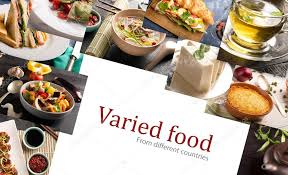

Katrai valstij ir savas neatkārtojamās īpatnības un savi raksturojošie priekšstati, kas pieder tikai noteiktajai valstij vai teritorijai. Šīs īpatnības ir pazīstamas visā pasaulē. Valsts nacionālā virtuve, ir ēdienu un dzērienu kopums, kas ļoti daudz ko izsaka par konkrēto teritoriju. Tās ir lietas, kuras, atrodoties šajā valstī vai teritorijā, noteikti ir jānobauda vai jāiepazīst, jo tā ir neliela daļa no visām kopīgajām tautas īpašībām.
Cik labi jūs zināt pasaules labākās virtuves? Ja jums patīk apceļot pasauli (vai ir pieejami šādi restorāni), noteikti nogaršojiet ēdienu kādā no šīm virtuvēm!
